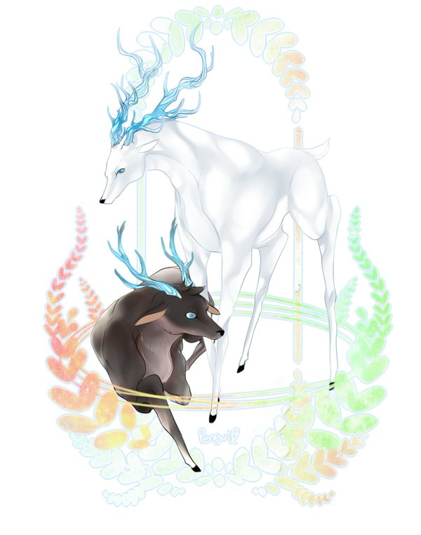

Loved since
D+0000
Codename:
Lamorak
Age 52
182cm
Middle Class

독식하고 싶네. 말했잖나.
Lamorak~Hugh Isles
52 years old
182cm / Middle Class
나이보다 더 늙어 보이는 백색머리는 나름 윤기를 지녀 초라해 보이지 않는데, 평소에는 무스를 발라 리젠트 스타일로 올리고 양옆으로 한 두 가닥 머리가 삐져나와있다. 하지만 원래는 댄디컷으로 샤워 후 보면 앞머리가 눈을 반 쯤 가릴 정도로 길다. 눈은 벽안, 쌍커풀이 얇고 눈두덩이가 깊어 그늘이 지는데 살짝 찢어진 눈이다. 콧대는 높되 얇은 편. 입술도 얇은편에 속하고 조금의 붉은 기를 가질 뿐 거의 누드베이지색에 가깝다. 꾸준한 운동과 관리로 마른 근육이 자리 잡은 몸은 정장핏이 꽤나 어울린다. 하지만 세월에 이기는 장사 없다고 눈가와 입가의 주름이 보인다. 그나마 다행으로 생각하는 건 목주름이 거의 보이지 않는다는 사실. 자세히 보면 턱 아래쪽에 작은 흉터가 있다.
Upper이 아닌 Middle로서 자랐기 때문에 자유롭고 관대한 편이지만 기준이 있어 철저한 곳에는 철저하다. 남도 예외는 아니다. 기준이 조금 다를 뿐.
기본적으로 웃음을 달고 다니며 약자들에게 상냥한 중년 신사. 자신이 비록 Upper Class는 아니지만 Kingsman인 이상 Noblesse Oblige를 실천해야 한다 생각.
용서 못하는 것은 스스로를 낮게 보거나 돌보지 않는 모습. 특히나 자신과 가까운 이가 저런 모습을 보이면 화를 낸다.
기본적으로 사용하는 무기는 우산 혹은 지팡이.
작은 소 동물을 좋아한다. 예를 들면 다람쥐, 햄스터, 고양이 etc.
잘 움직이지 않는다. 자신이 운동해야겠다 생각한 때와 임무 때를 제외하고는 크게 움직이지 않는 편.
왠만해선 다 잘 먹지만 맛있는 것을 좋아해 탐방을 주로 한다. 그래서 조카와 저녁식사가 잦은 편.
조카는 7년간 같이 다니다 보니 저도 맛있는 것을 찾게 돼 디저트를 좋아하지 않은 편임에도 부르면 나간다. 역으로 맛난 집을 찾았을 때 연락을 주기도 함.
오는 사람 안 막고 가는 사람은 Case by case.
Name:
Oscar Allen
Age 29
191cm
Working Class
나와 함께 해,
내 목줄은 당신 거니까
Oscar Allen
29 years old
191cm / Working Class
전체적으로 선이 곧은 인상. 매우 새까만 머리에 회색빛이 도는 푸른 눈. 입술 색이 유난히 붉은 편이며 전체적으로 생기가 돌아, 하얗다기보다는 조금 붉은 빛이 도는 혈색있는 피부. 키가 크고 마른 체형으로 보일 수 있으나, 모두 근육으로 이루어져 있어 군살없이 깔끔한 몸매. 왼볼 턱께에 점이 두 개 찍혀있으며 이외의 잡티는 없다. 손발이 크다.
나이대답게 친해지면 장난도 많이 치고 다혈질이라 욱할 때가 있다. 나무같은 성격. 자기가 옳은 것은 신념대로 밀고 나가며 꺾이지 않는다. 이것 때문에 자주 부딪히는 경우도 있음. 평소 성격은 말이 없는 편. 사람들과 있는 것과 스킨쉽을 어색해한다. 혼자 있는 것을 좋아해 멍하니 혼자서만 돌아다니는 경우가 대부분. 흥미본위로 살아왔으며, 또한 게으름피우는 것을 좋아해 쉬는 날에는 돌아다니지 않으면 주로 소파에 늘어져 담배를 피우거나 술을 마심. 본인은 모르지만 집착과 소유욕이 강하다. 웬만해서는 정을 주지 않으려 하며 호의적이기 보다는 거칠다. 연장자에 대해서는 기본적인 예의 정도 뿐.
거추장스런 악세사리는 좋아하지 않지만, 굳이 좋아하는 것을 따진다면 반지와 시계. 주로 입고 다니는 것은 흰 티에 청바지.
어렸을 때 버려져 고아원에 맡겨졌을 때, 고아원에서 주는 학대가 주로 어두운 곳에 가둬놓고 소리만 들리게 했던 일이었기 때문에, 이후로 어두운 곳에 대한 트라우마가 조금 있다. 고치려고 하지만 혼자 힘으로는 쉽지 않아 고생하는 중. 그렇기 때문에 혼자 사는 곳도 밝은 번화가 쪽이었음.
힘들고 어려운 일도 가리지 않고 해온 터라 힘이 세지만 컨트롤할 줄은 모름.
성적 취향은 담백하고 관심이 없지만, 무자각적인 SM적 성향이 있음.
고아원에서 공립 학교에서의 기본적인 교육만 받은 뒤 바로 아르바이트 생활을 시작했다. 취업보다는 하루 근근히 먹고 사는 식으로 일을 해왔으며 막노동이든 사무직이든 가리지 않고 살아옴. 스카웃 당하기 바로 직전 일은 고급 레스토랑 서빙일. 그곳에서 스카웃 제의를 받고 왔다.
Go Back-
-
Dear.
My Oscar잘 지내고 있나? 나일세. 휴. 자네에겐 라모락이란 명칭이 더 익숙할테니 그렇게 부르는 것이 더 나을까 했네만 가끔은 이름도 듣고 싶으니 말일세. 사랑하는 자의 입에서 제 이름을 들으면 울림이 세상을 벗어난 아름다움이라지 않는가? 표정 이상해질 자네를 생각하니 절로 웃음이 나는군.
그나저나 이렇게 편지로 인사하는 건 처음인가. 나부터도 임무 이외에 그다지 쓴 일이 없으니 조금 어색하네만, 임무도 있으니 한 번쯤은 이리 연락하지 않을까 했네. 자네를 임무에 데려오지 않은 건 이해해주길 바라. 자네가 일에 점점 익숙해지고 있고 스스로도 잘 해나간다는 것은 알고 있네만 그래도 자네가 다치지 않았으면, 그저 행복하기만 했으면 하는 내 마음도 이해해주길 바라네.
발렌타인데이 쯤에 도착했으면 좋겠네만 언제 도착할 지는 확실치 않군. 자네가 초코를 좋아하니 오늘 같은 날은 옆에서 일일이 챙겨주고 싶었네만 아쉽군. 대신이라고 할 수 있을지 모르겠지만 초코와 시계를 동봉해 보내네.
Happy Valentine, My dear- 돌아갈 때까지 무사히 있게.
With uncountable love,
Hugh Isles
p.s 시계 마음에 안 들거든 제품 증명서랑 교환서 가지고 가서 바꿔도 좋네. - 
-

-
Suit
instead of
Candy항상 껴있던 비구름은 어디로 갔는지, 하늘은 모처럼 푸른 빛을 보여주었다. 그에 반했는지 찻잔을 기울이던 손을 잠시 멈추고 라모락은 눈에 하늘을 비춰냈다. 동공 안에서 느리게 흘러가는 흰 구름은 반쯤 내리감은 눈꺼풀에 의해 감춰졌고 이내 남은 반쪽 동공에 차의 물결이 비쳤다. 이내 마른 입술을 축이듯 잔이 기울여졌다. 목울대가 천천히 움직였고 다른 이들의 귀에는 들리지 않을 목넘김 소리가 그의 귀에 부딪혔다. 만족스러운 향과 부드러우면서 깔끔한 맛. 약간의 텁텁함이 없잖아 있지만, 아무리 옅게 타도 홍차는 으레 그러했기에 괜찮냐고 건네오는 상대의 물음에 그는 웃으며 저번보다 낫다 대답해 주었다. 그리고 칭찬이 달가웠는지 말갛게 웃는 상대. 그는 큰 키에 곧은 이목구비 선이 매력적인 오스카였다.
찻잔을 다 비운 후, 다시 한번 창밖을 본 라모락이 웃으며 오스카에게 말을 걸었다.
“오늘은 나가볼까 하네만, 자네도 같이 가겠나?”
“어디 가는데?”
“시내로 나가볼까 하네. 자네가 같이 가준다면 가장 먼저 양복점을 들르겠지.”
같이 가주겠나? 양손으로 우산을 짚고 입꼬리를 올려 인자한 노신사 마냥 웃어 보인 라모락은 재차 허락을 구했다. 양복점이란 단어가 나올 때부터 오스카의 입꼬리가 실룩이며 올라가더니 이내 활짝 웃는 낯이 되었고 기분 좋은 듯이 같이 가겠다는 대답이 그의 입 밖으로 터져 나왔다.
이전부터 말해왔던 약속이건만 사건사고가 겹쳐 제대로 얘기조차 다시 못 꺼냈던 약속. 그러니 모처럼 여유가 찾아왔고 곁에 약속을 지킬 자가 있는 이 때, 약속을 이행하지 못할 이유가 어디 있겠는가?
기다렸다는 듯 금세 떨어진 허락의 말에 라모락은 눈꼬리를 조금 더 휘어 보이더니 손을 뻗어 오스카의 뒷머리를 감쌌다. 한 올 한 올 손을 스치는 머리카락 아래 여린 두피를 어루만지니 그는 간지러운 듯 얼굴이 조금인가 붉어지면서 목을 움츠렸다. 그러면서 짓는 노곤한 표정, 그 모습에 오스카의 이마에 입을 맞춘 라모락은 우산을 바로 잡으며 준비하고 오란 말을 남긴 후 문을 열어 먼저 나갔다. 그의 입에는 당연한 듯 미소가 걸려있었다.
***
상담을 위해서 마련되어 있는 쇼파 한쪽 끝에 팔을 기대고 그가 개인적으로 좋아하는 44년 샤토 라피트 로칠드가 반쯤 담긴 잔을 굴렸다. 따라 술이 출렁이고 얼음이 미끄러지듯 잔을 타고 굴렀지만 라모락의 눈은 잔 너머 어딘가를, 아니 그 무엇도 비추지 않았다. 오는 길 보았던 오스카의 표정. 양복점을 간다는 소리에 잔뜩 좋아하는 모습을 보였고 분명 오랜만의 외출일 테니 기분이 좋으리라 생각했건만 그는 얼굴에 알 수 없는 표정을 걸었다. 긍정적인 감정에 의한 건지 부정적인 감정에 의한 건지 알 수 없는 표정. 혹시 얼마 전의 사건을 떠올리는 건가. 사실을 유추해내기에 그가 아는 사실은 너무 적었다.
“라모락?”
어느새 끝난 건지 오스카가 허리를 숙인 채 말을 걸었다. 안전한 장소라지만 인기척을 못 느낄 정도로 생각에 빠졌다는 사실에 놀란 라모락은 잠시 눈을 키우다 이내 옅은 웃음을 입에 걸고서는 수고했다며 그의 머리를 쓰다듬어 주었다. 1번 피팅룸 앞에서 마저 정리하듯 종이를 끄적이던 재단사는 오스카가 앉고 나서야 그들의 맞은편으로 가 앉으며 종이를 내려놓았다.
“치수가 상당히 크신 데다 균형 잡힌 몸이셔서 아무 정장이나 입어도 어울리셨을 겁니다.”
“Gentle man이라면 맞춤 정장 정도는 입어줘야지. 그리고 킹스맨의 정장은 항상 방탄이지 않나? 만약 합격하지 못한다 하더라도 기념으로 삼을 수 있을걸세.”
그 말에 싱긋 웃어 보인 재단사는 손의 펜을 한 번 놀리고는 바로 잡고 질문을 던졌다. 캔버스, Fully, 싱글 투버튼. 드레스셔츠, 윈저 컬러, 더블 커프스. 오스카를 한 번씩 보면서 질문을 주거니 받거니 하던 재단사와 라모락은 옷 디자인에 관해 얘기를 했다. 그 과정에서 오스카가 결정한 건 정장의 색뿐이었다.
재단사는 마지막으로 오스카를 한 번 보더니 이내 종이를 모아 정리해 탁자에 탁탁 치고는 웃으며 둘을 마주 보았다.
“지금 말씀하신 사항은 고려해보고 디자인하도록 하겠습니다만 제 생각에 따라 바뀔 수도 있다는 점 알아두시길 바랍니다.”
“그러지. 자네의 안목은 믿고 있네.”
그럼. 일어나 둘에게 인사를 올린 재단사를 뒤로하고 라모락과 오스카는 양복점에서 벗어났다.
“후우- 아까 전에 무슨 얘기하는지 하나도 모르겠던데요?”
아직도 어안이 벙벙하다는 듯 고개를 한 번 절레 흔든 오스카가 이내 웃는 낯으로 라모락에게 질문을 걸어왔다. 윈저 칼라가 뭐에요? 다른 것도 다 알려줘. 여전히 호기심이 많은 자라 생각하며 라모락도 마주 웃어주며 하나하나 설명해나갔다.
***
“…여기와도 되는 거에요? 정장 갖춰진 다음에 와야 할 거 같은데….”
“괜찮네. 2명으로 부탁하지.”
“Yes. 그래도 모자는 벗어주시길 바랍니다.”
지배인으로 보이는 사람이 하는 말이 채 끝나기도 전에 오스카는 모자를 냉큼 벗어 손에 쥐었다. 그 모습에 웃어 보인 웨이터의 안내를 받아 들어간 레스토랑의 전경은 꽤 고급스러웠다. 멋들어진 패턴이 수놓인 붉은 계통의 벽은 고혹적이면서도 절제된 느낌을 주었고 천장에 달린 조명 장식물들 하나하나에는 세세한 세공이 가미되어 있어 고급스러운 느낌을 풍겼다. 그들이 앉은 안쪽 구석진 곳 또한 마찬가지.
마주 앉은 두 사람은 오스카의 잘 모른다는 말과 함께 라모락이 선택한 메뉴 하나, 웨이터가 추천하는 메뉴 하나씩을 시켰고 음식이 나오길 기다리며 작은 얘기들을 나눴다. 이윽고 음식이 나온 뒤에도 얘기를 나누던 두 사람은 맛을 평하기도 하면서 시답잖은 얘기들을 꺼내놓았다. 그러던 중, 라모락은 문득 생각난 듯 잠시 식기를 멈추고 오스카를 바라보며 넌지시 말을 건넸다.
“그나저나 자네 오늘 표정 안 좋아 보이던데 무슨 일 있나?”
던져오는 질문에 오스카의 표정은 다시 알 수 없는 그것으로 바뀌었다. 포크를 내려놓고 입을 달싹일 뿐 선뜻 아무 대답도 하지 않던 오스카는 시선을 피하며 연신 대답하기를 망설이듯 입을 떨어뜨리지 않았다.
“대화는 눈을 보고. 전에도 말하지 않았나 Mr.Allen.”
그 말에 겨우 눈을 마주친 오스카는 조금쯤 붉어진 얼굴로 입술을 겨우 떼었다. 그의 입에서 나온 질문은 라모락의 입장에선 참으로 어이없는 것이어서 작은 허탈감도 느꼈다. 옷을 왜 사줬느냐라.
“약속하지 않았나?”
“그 이유가 다야? 정말?”
그럼 무슨 이유가 있겠는가? 라모락이 이해하지 못하겠다는 얼굴을 하며 마주 앉은 상대방을 바라보자 고개를 떨구려다 멈춘 듯 그의 몸이 움찔거리더니 다시 고개를 들어 눈을 마주했고 입을 달싹였다. 그리고선 하는 말. 목줄을 쥐어주는 것 말고는 뭘 해야할지 모르겠다. 확신이 없다.
확실히 지난번의 독식하고 싶다는 말은 잠자리 중에 나온 말이었다. 물론 정확히 말하자면 그 전후에 나온 얘기라지만 이후로 그 비슷한 말을 꺼낸 적이 없으니 불안할 수도 있을 터. 드디어 표정의 진실을 조금이나마 들여다본 듯한 기분에 라모락은 살풋 웃더니 오스카를 지그시 쳐다보았다.
“자네, 내가 했던 말 기억하나?”
“어.”
“그 말, 이 말과 같은 의미일세. 자네를 사랑하네. 나만 바라봐주게나.”
간질간질한 말들. 진심을 다해 이런 말을 입에 올리는 날이 올 줄이야. 스스로도 간지러워 열이 오르는 느낌을 받았지만, 앞의 이는 이미 전에 몇 번 보았던 것처럼 얼굴이 잔뜩 붉어져 있었다. 꿍얼이며 한동안 제 얼굴을 가리고 있는 오스카에게 마저 먹으라 다독이며 기분 좋은 미소를 입에 건 채 라모락은 제 식기를 놀릴 뿐이었다. -

-

-

-